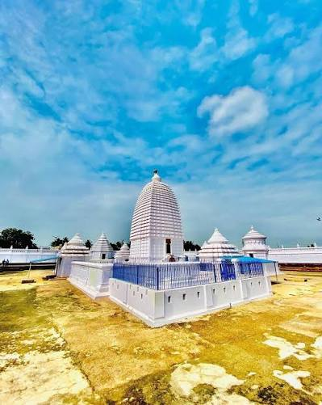
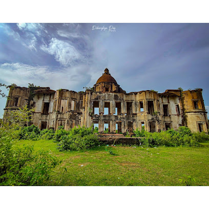
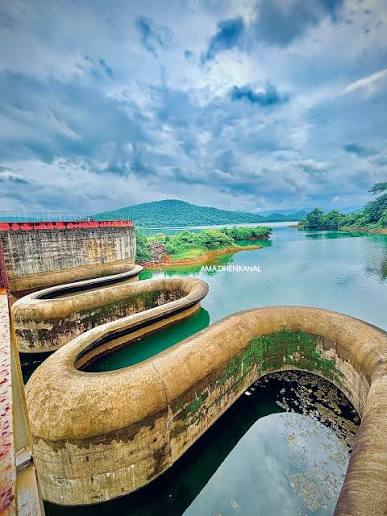

DHENKANAL
PEACE CITY
Explore the breathtaking beauty of Dhenkanal, where nature, history, and culture come together. Discover its beautiful tourist places and experience the unique charm of Odisha.”

Explore the breathtaking beauty of Dhenkanal, where nature, history, and culture come together. Discover its beautiful tourist places and experience the unique charm of Odisha.”
Your guide to exploring the beauty of Dhenkanal.
Welcome to our Dhenkanal Tourist Guide, your simple and easy way to discover the beautiful places of Dhenkanal.
Explore famous tourist places, historical sites, temples, natural attractions and beautiful destinations around Dhenkanal.
Our goal is to help visitors find places to explore, stay, eat and enjoy while experiencing the culture and natural beauty of Dhenkanal.
Discover Places.
Plan Your Journey.
Enjoy Dhenkanal.
Everything you need to explore and enjoy Dhenkanal.

Kapilash Temple is one of the most famous religious and tourist places in Dhenkanal. Located on the Kapilash hills, the temple is dedicated to Lord Shiva. Surrounded by beautiful green hills and peaceful natural scenery, it is an important spiritual destination as well as a popular place for visitors.

Joranda Mahima Gadi is an important spiritual centre associated with the Mahima Dharma tradition. The peaceful surroundings and unique religious practices attract devotees and visitors from different places. The famous Magha Mela held here is an important cultural and spiritual occasion.

Dhenkanal Palace is a beautiful heritage attraction that represents the royal history of Dhenkanal. The palace and its surroundings reflect the architectural and cultural heritage of the former Dhenkanal royal family. It is an interesting destination for visitors who enjoy history and heritage.

Jatan Nagar Palace is a historic site in Dhenkanal surrounded by natural beauty. The remains of the palace tell an interesting story of the region's past. Its peaceful surroundings and historical importance make it a fascinating place for people interested in heritage and local history.

Anantasayi Vishnu at Sarang is a remarkable religious and historical attraction. The site is known for its beautiful representation of Lord Vishnu resting on the serpent Ananta. The peaceful atmosphere and ancient artistic character make it a special destination for visitors interested in Odisha's culture, religion and heritage.

Sapua Dam is a beautiful natural destination surrounded by greenery and peaceful landscapes. The water reservoir and surrounding hills create a relaxing environment away from the busy city. It is a good place to enjoy nature, take photographs and spend peaceful time with friends and family.

Dandadhar Dam is a scenic destination surrounded by greenery and natural landscapes. The reservoir provides a peaceful setting where visitors can enjoy the beauty of nature. It is especially attractive for people looking for a quiet place away from the busy urban environment.

Astashambhu Temple at Kualo is an important religious attraction associated with Lord Shiva. The temple is known for its spiritual significance and traditional surroundings. It is a peaceful destination for devotees and visitors who want to experience the religious heritage of Dhenkanal.

Sunajhar Waterfall is a beautiful natural attraction surrounded by greenery and rocky landscapes. The sound of flowing water and the peaceful environment make it an enjoyable destination for nature lovers. It is a wonderful place to explore the natural beauty of Dhenkanal and capture memorable photographs.
Everything you need to explore and enjoy Dhenkanal.
Discover the famous temples, waterfalls, dams, palaces and other beautiful tourist destinations of Dhenkanal.
Find suitable hotels and comfortable places to stay during your trip to Dhenkanal.
Explore local food, popular restaurants and delicious Odia dishes to enjoy during your journey.
Get useful information and simple travel guidance to plan your Dhenkanal trip easily.
Find locations and get directions to popular tourist places around Dhenkanal using maps.
Experience the natural beauty, culture, festivals, temples and heritage of Dhenkanal.
Discover beautiful tourist places, peaceful nature, rich culture and historical attractions of Dhenkanal with our travel guide.